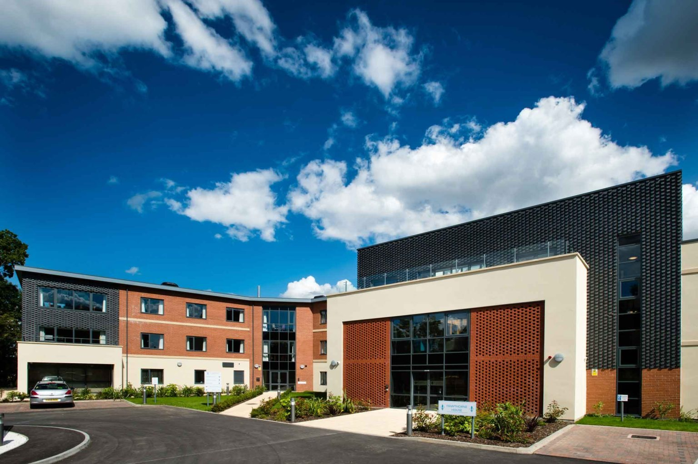
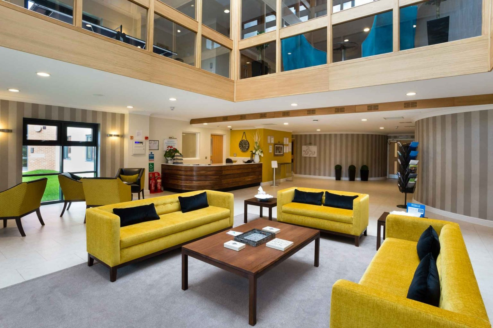
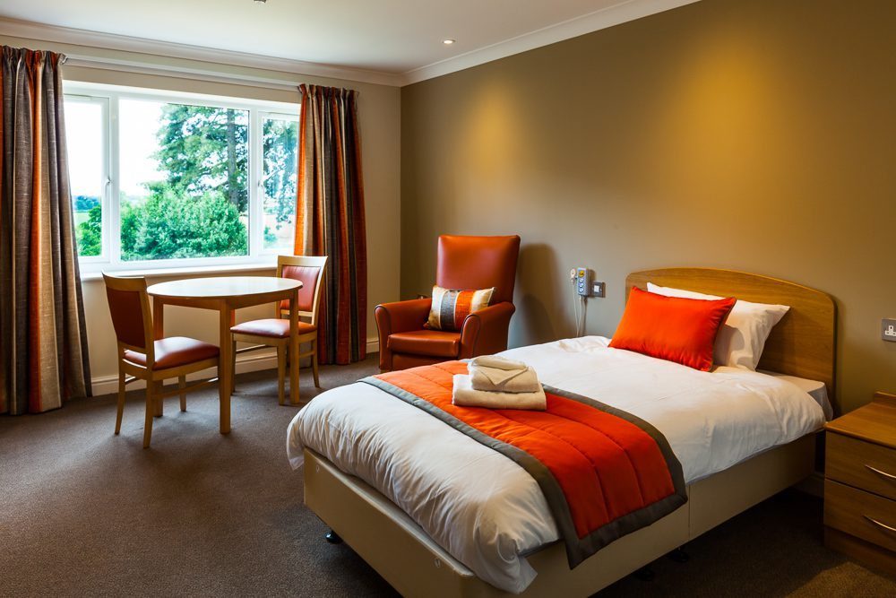

Tell us who you cannot place.Supporting lives, shaping futures.
Two mental health hospitals and eight specialist nursing homes across Northamptonshire, Coventry and East Sussex. One referral line reaches every service, and the same provider stays with the person at every stage, so the placement search never has to start over.



Start where you are.
Ten services. Three regions.
Local placements, and repatriation from out of area. Choose a service to see who it is for, how people get in, and what the neighbourhood is like.
Northampton, Spratton, Corby, Coventry and St Leonards-on-Sea.
Eight stages. One provider, the whole way.
From the first call about somebody nobody else will take, to a home they do not have to leave again. The same provider at every stage, so the placement search never has to start over.
- 01The enquiryOne referral line and one inbox reach every service in the group.
- 02The assessmentAssessed by our clinical team before admission, wherever the person is.
- 03The matchThe service, the unit, single sex where it matters, and the observation level.
- 04The admissionDischarge to assess, planned from hospital or home, respite, and Section 117.
- 05Settling inA room they can truly call home, with a personalised care plan reviewed and adapted as often as their needs change.
- 06Living wellTherapy, activity and outings. The things that make a day worth having.
- 07Progress and reviewIndependence handed back in stages, against the goals set at the start.
- 08Moving on, or stayingStep down within our own services, or a home here for as long as needed.
More than a bed, we provide a complete care pathway. From the level of support needed today through to step down within our own services, we offer continuity of care without the need to restart the placement search.
How referrals workThe placements others decline.
Scores you can check for yourself.
Review scores from carehome.co.uk, where families and residents review independently, a food hygiene rating and the trade press. Every one of them published by somebody other than us.
Staff are always helpful and caring. They let you know about how he has been doing and any concerns. The Manager & Nurse have the appropriate conversations and are genuinely caring and understanding. They go above & beyond. I have been impressed with the care they give to my dad.

We care.
Our vision is a world where every person, regardless of the complexity of their needs, has the opportunity to live with dignity, purpose and hope. We strive to be the very best provider of specialist care, trusted by families, commissioners and communities to support people when others cannot.
Because great care starts with people, and every person matters.
From across St Matthews.


Built by our people.
Change at St Matthews is not being done to our people. It is being built by them. Join colleagues across ten services who see the person before the condition.